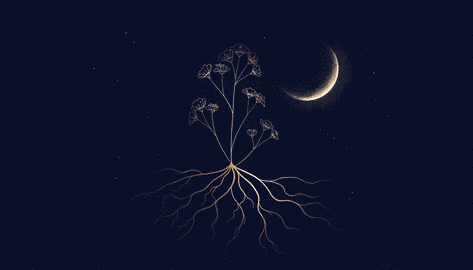
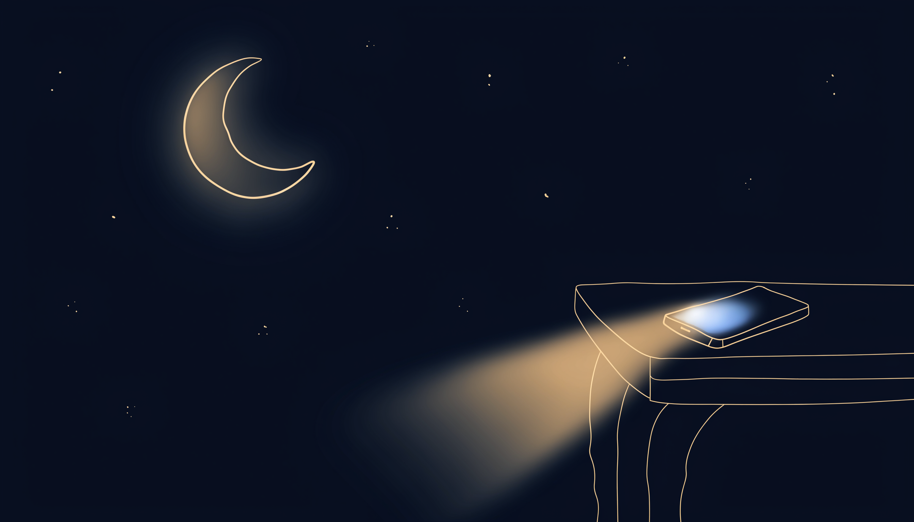
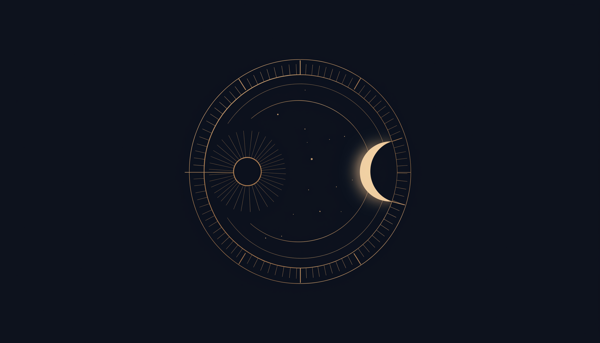
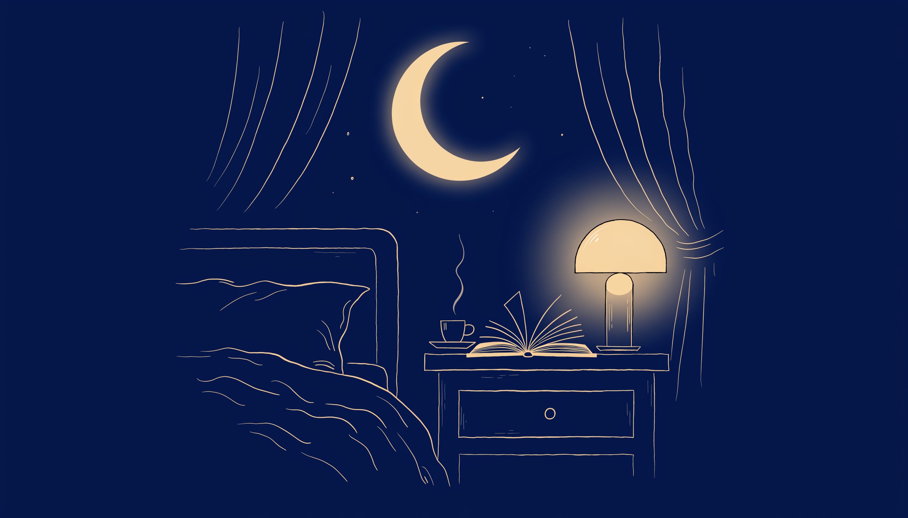
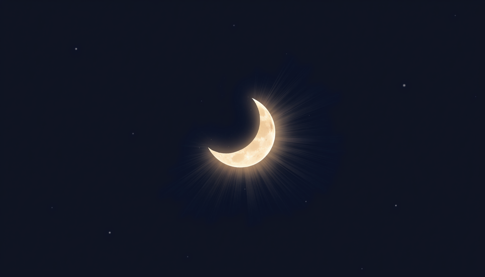
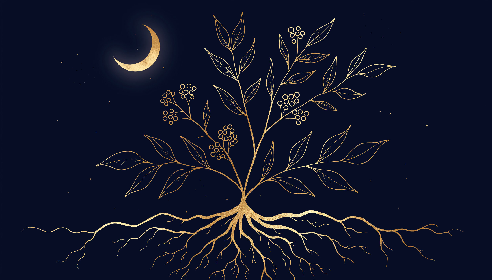
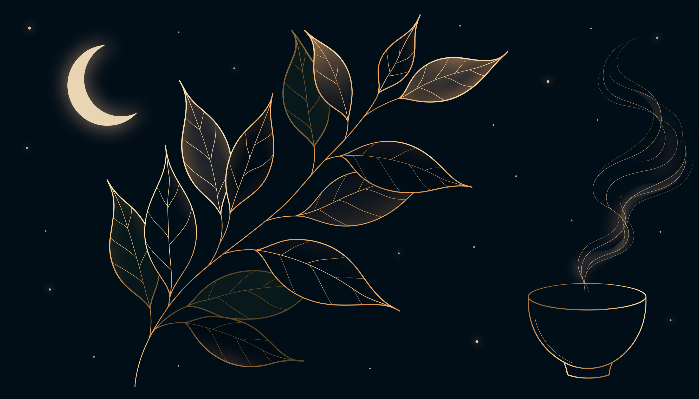

Loading today's challenge…
A new one every day — no app, no tracking, just try it tonight.Night Owl or Morning Lark? What the Genetics of Chronotype Actually Show
A genome-wide study of nearly 700,000 people found 351 genetic locations linked to being a "morning person" — and that genetic morningness is causally tied to better wellbeing and lower depression risk.
Read article →Sleep and Aging: What the Research Says Actually Changes
Older adults need just as much sleep as everyone else — about 7 to 9 hours. What actually changes with age is depth, timing and continuity. Here's what a landmark meta-analysis of over 3,500 people actually found.
Read article →Social Jetlag: Why Your Weekend Sleep Schedule Fights Your Body Clock
About 70% of people experience at least an hour of "social jetlag" — the gap between weekday and weekend sleep timing — and roughly half see two hours or more. Here's what the research says it does to metabolic health.
Read article →Sleep and Menopause: What the Research Says About Hot Flashes and Insomnia
A 2025 meta-analysis found roughly 72% of perimenopausal women report a sleep disorder, and hot flashes were linked to insomnia in about 80% of those cases. Here's what the research on menopause and sleep actually shows.
Read article →Sleep and Chronic Pain: What the Research Says About Which Comes First
A 2024 narrative review found sleep impairment predicts pain more strongly than pain predicts sleep loss, and a single night of sleep deprivation is enough to measurably lower pain thresholds. Here's what the research actually shows.
Read article →Sleep and the Gut Microbiome: What the Research Actually Shows
A PLOS One study found greater gut bacteria diversity was linked to more efficient, longer sleep. Here's what the research on the gut-brain-sleep connection actually shows.
Read article →Sleep and Memory: How Your Brain Consolidates What You Learn
An MRI study out of UC Berkeley found sleep-deprived brains show a sharp drop in hippocampal activity during learning. Here's what the research actually shows about sleep and memory consolidation.
Read article →Passionflower and Sleep: What the Research Actually Shows
A 2020 sleep-lab trial of 110 insomnia patients found passionflower extract significantly increased total sleep time on polysomnography. Here's what the evidence on passionflower and sleep actually shows.
Read article →Lavender and Sleep: What the Research Actually Shows
A college-student RCT found lavender inhalation improved sleep quality scores beyond sleep hygiene alone. Here's what the evidence on lavender and sleep actually shows — and what's still unclear.
Read article →Sleep and Weight: The Ghrelin-Leptin Connection
A landmark study found two short nights dropped leptin 18% and raised ghrelin, alongside a 24% jump in hunger. Here's what the research on sleep and appetite hormones actually shows.
Read article →Sleep and Blood Pressure: What the Research on Heart Health Actually Shows
A 2024 meta-analysis of over a million people found short sleep raised hypertension risk by up to 11%. Here's why the American Heart Association now treats sleep as a core vital sign.
Read article →Evening Meal Timing and Sleep: What the Research Actually Shows
A 793-person student survey found eating within 3 hours of bedtime raised the odds of nighttime awakenings by 61%. A Harvard/Brigham study explains why: late meals shift hunger hormones and metabolism, not just digestion.
Read article →Cortisol and Sleep: How Your Stress Hormone Rhythm Shapes Rest
Cortisol isn't just a stress hormone — it runs on a 24-hour rhythm that's supposed to be lowest at bedtime. Here's what a 2025 systematic review found about how stress and poor sleep feed into each other.
Read article →Warm Bath or Cold Plunge? What Actually Helps You Fall Asleep
A 2019 meta-analysis found a warm shower or bath 1-2 hours before bed reliably shortens time to fall asleep. Cold plunges are trendier, but the sleep evidence is thinner and timing matters a lot more.
Read article →Tryptophan and Sleep: What the Turkey Myth Gets Wrong
A 2022 meta-analysis found tryptophan supplementation can shorten time spent awake after sleep onset — but the dose that works is far more than a plate of turkey provides. Here's what the research actually shows.
Read article →Weighted Blankets and Sleep: What the Deep Pressure Research Actually Shows
A 2020 randomized controlled trial found people using a weighted blanket were roughly 26 times more likely to see a major drop in insomnia severity. Here's what the evidence actually supports.
Read article →Morning Light and Sleep: Why Your First Hour Awake Sets the Clock for Tonight
A controlled study found a single 30-minute dose of morning light did 75% of the work of a full 2-hour dose in resetting the circadian clock — the underused half of the "manage your light" advice.
Read article →Sleep and Your Immune System: What the Research Actually Shows
A landmark study found people sleeping under 6 hours a night were over four times more likely to catch a cold after viral exposure. Here's what's actually known about the sleep-immunity link.
Read article →Glycine and Sleep: What the Research Actually Shows
A 2007 study in Sleep and Biological Rhythms found 3 grams of glycine before bed improved sleep quality — later research explains why, tracing the effect to NMDA receptors in the brain's master clock.
Read article →CBT-I: Why Doctors Recommend Therapy Before Sleep Medication
The American College of Physicians says adults with chronic insomnia should try cognitive behavioral therapy before medication. Here's what CBT-I actually involves, and why it holds up over time.
Read article →The Glymphatic System: How Your Brain Cleans Itself While You Sleep
A 2013 study in Science found the space between brain cells expands by roughly 60% during sleep, driving the fluid exchange that clears out metabolic waste. Here's how it actually works.
Read article →Sleep Trackers: How Accurate Are They, Really?
A 2021 study in the journal SLEEP found consumer sleep trackers classify sleep stages correctly only 60-80% of the time versus polysomnography. Here's what wearables actually get right.
Read article →Sleep and Hydration: The Two-Way Street Between Water and Rest
A 2019 study of over 20,000 adults found short sleepers were far more likely to be dehydrated — and dehydration can disrupt sleep right back. Here's the two-way link, per the journal SLEEP.
Read article →Snoring vs. Sleep Apnea: How to Tell the Difference
Most snorers don't have sleep apnea, and some people with sleep apnea barely snore — here's what actually separates them, per NHLBI and Mayo Clinic, and when it's worth getting checked.
Read article →Jet Lag: Why Flying East Hits Harder Than Flying West
The Sleep Foundation says about 75% of travelers find eastbound trips tougher than westbound — here's the circadian mismatch behind it and what timed light exposure actually does.
Read article →Sleep and Mental Health: Untangling Which Comes First
A CDC-backed study of over 270,000 adults found short sleepers report far more frequent mental distress — evidence the relationship may run both ways.
Read article →Side, Back, or Stomach: What Your Sleep Position Actually Does
A rodent study on brain waste clearance and a surprisingly large share of sleep apnea are both tied to sleep position — here's what the evidence actually supports.
Read article →White Noise and Sleep: What the Research Actually Shows
White noise machines are a bedtime staple, but the evidence they actually improve sleep is thinner than the habit suggests — plus a real caution about volume.
Read article →Shift Work and Sleep: What Circadian Misalignment Actually Costs You
Shift work disorder is a recognized circadian rhythm sleep disorder linked to real cardiovascular risk, not just tiredness — here's what the research actually shows.
Read article →GABA for Sleep: The Blood-Brain Barrier Problem the Marketing Skips
GABA is marketed as a natural sleep aid because it calms the brain internally — but oral GABA may not even cross the blood-brain barrier. Here's what the trials actually found.
Read article →Sleep and Blood Sugar: How a Few Short Nights Change Insulin Sensitivity
NIH-funded research shows just six weeks of short sleep measurably raises insulin resistance — here's the mechanism and what the data actually says.
Read article →
Valerian Root and Sleep: What the Evidence Actually Shows
One of the most-studied herbal sleep aids around — yet major clinical guidelines still recommend against it for insomnia. Here's how both things can be true.
Read article →Sleep Debt: Why the Weekend Doesn't Fully Pay It Back
The research on accumulated sleep loss — and why a weekend lie-in only repays a fraction of what a short week of sleep actually costs you.
Read article →Chamomile and Sleep: What the Research Actually Shows
A centuries-old bedtime ritual with a real (if modest) evidence base — what apigenin and the clinical trials actually show.
Read article →The 90-Minute Sleep Cycle: Why Your Night Isn't One Long Block
Sleep moves through repeating NREM-REM cycles that shift in composition through the night — here's how, and why it affects how groggy you feel on waking.
Read article →
The Ideal Bedroom Temperature for Sleep, According to the Science
Why falling asleep is really a thermoregulation event — and what the research says about keeping your room in the 60–67°F range.
Read article →
What Alcohol Actually Does to Your Sleep Architecture
A nightcap can help you drift off faster — here's what the research says it does to your REM sleep a few hours later.
Read article →
Caffeine and Sleep: Finding Your Real Cutoff Time
Half-life, individual variability, and why "no coffee after 2pm" is a decent default but not a universal rule.
Read article →
The Science of Napping: How to Nap Without Wrecking Your Night
Why a 20-minute nap can sharpen you up and a 45-minute one can leave you groggier than before.
Read article →
What Blue Light Actually Does to Your Sleep
The real mechanism behind the "no screens before bed" advice — and where the evidence is more nuanced than the headlines suggest.
Read article →
The Sleep-Exercise Connection: Why Timing Matters
Exercise reliably improves sleep quality — except when it doesn't. Here's what the timing research actually shows.
Read article →
Circadian Rhythm 101: How Your Internal Clock Actually Works
Meet the suprachiasmatic nucleus — the brain structure quietly running your entire 24-hour cycle.
Read article →
Building a Wind-Down Routine That Actually Works
The handful of habits that make the biggest measurable difference to how fast — and how well — you fall asleep.
Read article →
Why We Left Melatonin Out of MoonBites
Melatonin is a hormone, not a nutrient — and that distinction matters more than most sleep aids let on.
Read article →
Ashwagandha and the Science of Stress
Why an adaptogen with centuries of traditional use is also one of the most-studied botanicals in modern sleep research.
Read article →
L-Theanine: How a Compound From Tea Leaves Helps You Unwind
Not a sedative — an amino acid that quiets mental noise without knocking you out.
Read article →Magnesium Glycinate: The Mineral Most of Us Are Missing
Involved in over 300 enzymatic reactions — and one of the most common nutritional shortfalls in modern diets.
Read article →
Why Sleep Is Your Body's Most Underrated Health Tool
Immune function, memory, mood — the case for treating sleep as a top-tier health priority, not an afterthought.
Read article →Quick Sleep Myths, Busted
That's the free stuff — more added regularly
No newsletter signup, no paywall. This page gets a new research breakdown added every few days — bookmark it if you want to keep up.
Back to top ↑Curious what we actually build with all this research? MoonBites is here — entirely optional.